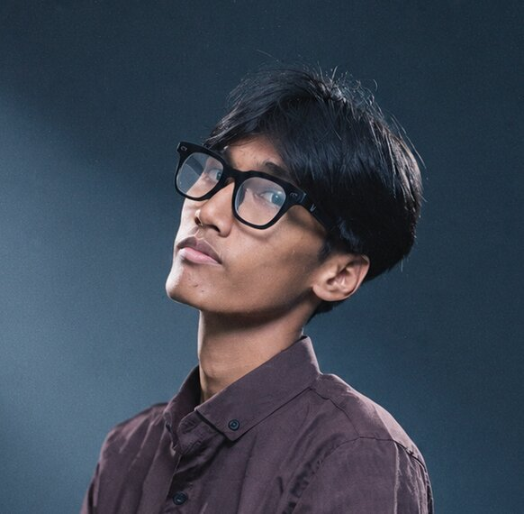

Bio
Saya adalah soerang mahasiswa S1 Statistika tahun ke 2, yang sedang fokus mempelajari bidang statistika komputasi; visualisasi; dan analisis sains data, dan saya menyukai analisis data, kreatif desain, dan teknologi.
Halo, saya
Mahasiswa S1 Statistika
Seorang mahasiswa statistika yang mempunyai minat ke bidang komputasi, analisis data, kreatif desain, dan beberapa kesenian.

[FOTO PROFIL]Saya adalah soerang mahasiswa S1 Statistika tahun ke 2, yang sedang fokus mempelajari bidang statistika komputasi; visualisasi; dan analisis sains data, dan saya menyukai analisis data, kreatif desain, dan teknologi.
S1 Statistika, Universitas Jenderal Soedirman, (2025 - Sekarang)
Komputasi, analisis data, machine learning, desain, seni, teknologi.
Saya adalah seseorang yang memadukan logika dan kreativitas untuk terus belajar, membangun sesuatu yang bermakna, dan menerjemahkan data menjadi bahasa yang dapat dipahami manusia.
Membantu mengelola kebutuhan desain dan media dalam kepengurusan acara dan dokumentasi acara.
Kontribusi: Membantu merangcang desain logo, feeds, dan aftermovie, serta melakukan dokumentasi pada hari acara berlangsung.
Membantu mengelola kebutuhan desain dan media dalam kepanitiaan acara.
Kontribusi: Merancang desain logo, merchandise, pamflet, dan melakukan dokumentasi kegiatan.
Bertanggung jawab atas visual branding acara malam keakraban mahasiswa statistika.
Kontribusi: Merancang video teaser, maskot, id card, pamflet, aftermovie, dan struktur feed media sosial.
Membantu mengelola kebutuhan desain dan media dalam kepengurusan himpunan.
Kontribusi: Penanggung jawab program kerja Event Support.
Membantu mengelola kebutuhan desain dan media dalam kepengurusan acara.
Kontribusi: Membantu merangcang desain id card, live report, dan susunan feeds.

[ISSUER] · [TAHUN]

[ISSUER] · [TAHUN]